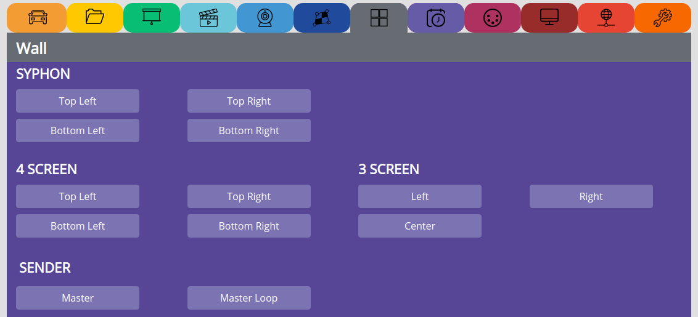

VIDEO WALL¶
Make sure that you have placed a 1920x1080 video named:
piwall.mp4 in /media/internal/video
SYPHON¶
Here you can select the syphon slave screen
4 SCREEN¶
Select the slave screen for a 4 screen setup
SENDER¶
Select this to stream a master video to PiWall slaves
Make sure that you started slaves before the master!
You can also use any Linux computer to be master enable broadcast:
sudo route add -net 224.0.0.0 netmask 240.0.0.0 eth0
and then stream as master:
avconv -re -i /your/movie.mp4 -vcodec copy -f avi -an udp://239.0.1.23:1234
make your mac computer as server to serve the video files for Pi-Wall:
to make your Mac OSX the PiWall Master, first install wget:
http://rudix.org/packages/wget.html
http://ftp.gnu.org/gnu/wget/wget-1.15.tar.gz
then:
wget http://libav.org/releases/libav-10.1.tar.gz
tar -xvzf libav-10.1.tar.gz
cd libav-10.1
sudo port install yasm zlib bzip2 faac lame speex libogg libvorbis libtheora libvpx x264 XviD openjpeg15 opencore-amr freetype
Build libav:
./configure \
--extra-cflags=-I/opt/local/include --extra-ldflags=-L/opt/local/lib \
--enable-gpl --enable-libx264 --enable-libxvid \
--enable-version3 --enable-libopencore-amrnb --enable-libopencore-amrwb \
--enable-nonfree --enable-libfaac \
--enable-libmp3lame --enable-libspeex --enable-libvorbis --enable-libtheora --enable-libvpx \
--enable-libopenjpeg --enable-libfreetype --enable-doc --enable-gnutls --enable-shared
make && sudo make install
Finally run as master:
avconv -re -i /Users/path/to/video/testfile10.mp4 -f avi -an udp://239.0.1.23:1234